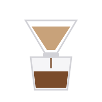

Пять способов заварить кофе дома
Пуровер, френч-пресс, турка, аэропресс и гейзерная кофеварка: пропорции и время.

Чтобы вкусно заварить кофе, не нужна дорогая кофемашина. Главное - свежий кофе, правильный помол, чистая вода температуры 90-96 °C и точная пропорция. Ниже пять способов, для которых достаточно простой посуды.
| Способ | Помол | Пропорция | Время |
|---|---|---|---|
| Пуровер (воронка) | средний | 15 г на 250 мл | 2,5-3 мин |
| Френч-пресс | крупный | 15 г на 250 мл | 4 мин |
| Турка | очень мелкий | 8-10 г на 100 мл | до первого подъема пены |
| Аэропресс | средне-мелкий | 15 г на 220 мл | 1,5-2 мин |
| Гейзерная кофеварка | мелкий | по объему воронки | до шипения |
Пуровер
Промойте бумажный фильтр горячей водой, засыпьте кофе и залейте немного воды, чтобы зерно «раскрылось» (30 секунд). Затем лейте воду тонкой струей по кругу до нужного объема.
Френч-пресс
Залейте кофе крупного помола горячей водой, перемешайте, накройте крышкой и через 4 минуты медленно опустите поршень. Наливайте сразу, чтобы напиток не горчил.
Турка
Засыпьте кофе в холодную воду и нагревайте на слабом огне, не перемешивая. Снимите турку, как только пена начнет подниматься.
Аэропресс
Засыпьте кофе, залейте водой, перемешайте и через минуту плавно выдавите напиток через фильтр. Аэропресс прощает ошибки и подходит для поездок.
Гейзерная кофеварка
Налейте воду в нижнюю часть до клапана, засыпьте кофе в воронку без утрамбовки и поставьте на средний огонь. Снимите, как только кофеварка начнет шипеть.